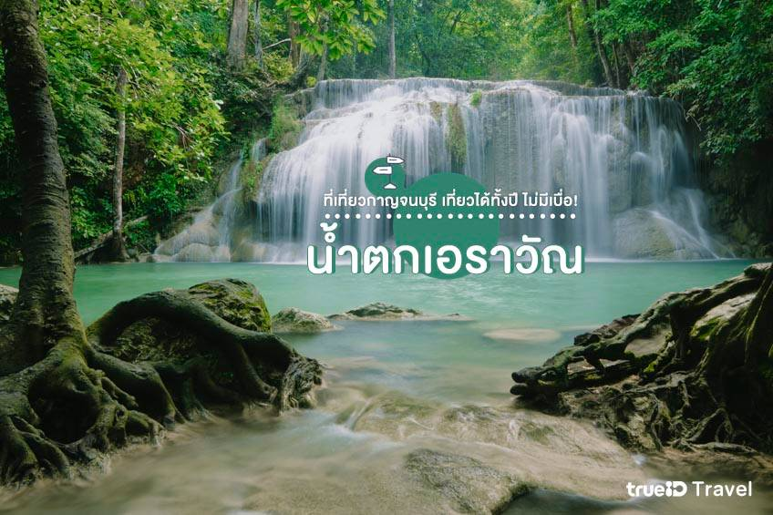

สถานที่ท่องเที่ยวในกาญจนบุรี
1. ถ้ำกระแซ ทางรถไฟสายมรณะ

ถ้ำกระแซ ที่นี่เป็นจุดชมแม่น้ำแควที่เรียกว่าวิวดีที่สุดในเมืองกาญจนบุรีที่เราเรียกกันว่า ทางรถไฟสายมรณะ ค่ะ
ถือว่าเป็นจุดที่สวยที่สุด และอันตรายที่สุดของเส้นทางรถไฟ ด้วยความสูงมากๆ
และติดเลียบหน้าผาทำให้เสียวสันหลังเล็กๆ มองลงไปด้านล่างทำเอาเข่าเกือบทรุดเลยทีเดียวค่ะ
นักท่องเที่ยวสามารถเดินไปถ่ายรูปเล่นได้บนรางรถไฟแต่ก็ต้องคอยระวังในการเดิน และระวังรถไฟด้วยค่ะ
เพราะที่แห่งนี้ยังเปิดให้รถไฟวิ่งได้ตามปกติ ถัดมาจะเป็นถ้ำ
ซึ่งเคยเป็นที่พักของเชลยศึกเมื่อครั้งสร้างเส้นทางรถไฟสายมรณะจากไทยไปพม่า
และภายในถ้ำยังมีพระพุทธรูปศักดิ์สิทธิ์ประดิษฐานอยู่ด้วย
ที่อยู่ : ตำบลลุ่มสุ่ม อำเภอไทรโยค จังหวัดกาญจนบุรี
พิกัด : https://maps.app.goo.gl/mAwkZHyuyD5DpUMW9
เปิดให้เข้าชม : 07.00-18.00 น.
2. สะพานข้ามแม่น้ำแคว

สะพานข้ามแม่น้ำแคว แลนด์มาร์คแรกๆ ที่ทำให้เราคิดถึงเมืองกาญจน์
ตรงที่แห่งนี้เป็นจุดเชื่อมโยงของประวัติศาสตร์โลกในหน้าสงครามโลกครั้งที่ 2
และเป็นอนุสรณ์สงครามมหาเอเชียบูรพา ค่ะ
ไฮไลท์ในการมาเที่ยวที่นี่ก็คือ การได้มาเดินบนรางรถไฟบนสะพานข้ามแม่น้ำแควซึ่งมีระยะทาง 300 เมตร
ทางการรถไฟแห่งประเทศไทยอนุญาตให้นักท่องเที่ยวสามารถเดินบนรางรถไฟ ชมความงามของสองฝากฝั่งแม่น้ำแควได้
แต่ต้องระวังสัญญาณหากทีรถไฟผ่านมาด้วยค่ะ
ที่อยู่ : ตำบลท่ามะขาม อำเภอเมืองกาญจนบุรี จังหวัดกาญจนบุรี
เปิดให้เข้าชม : 06.00-18.00 น.
3. ด่านเจดีย์สามองค์

ด่านเจดีย์สามองค์ เป็นเขตสิ้นสุดชายแดนตะวันตกของประเทศไทย กั้นพรมแดนระหว่างไทยและเมียนมาค่ะ
ในยุคสมัยกรุงศรีอยุธยานั้นที่แห่งนี้เคยเป็นช่องทางเดินทัพที่สำคัญในการทำสงครามไทย–พม่า
ในประวัติศาสตร์อีกด้วย

บริเวณด่านเจดีย์สามองค์นั้นจะมีจุดในเลือกซื้อสินค้าราคาถูกเป็นของฝากของที่ระลึก
รวมถึงเป็นจุดที่เราสามารถยื่นเรื่องของผ่านแดนข้ามไปเที่ยววัดสวยๆ ฝั่งเมียนมาได้อีกหลายแห่งเลยค่ะ เช่น
วัดเสาร้อยต้น วัดเจดีย์ทอง รวมไปถึง ตลาดพญาตองซู ได้ค่ะ แต่ต้องกลับมาฝั่งไทยเราไม่เกิน 18.00 น.
ที่อยู่ : ตำบลหนองลู อำเภอสังขละบุรี จังหวัดกาญจนบุรี
เปิดให้เข้าชม : 06.00-18.00 น.
4. อนุสรณ์สถาน พิพิธภัณฑ์ ช่องเขาขาด

อนุสรณ์สถาน ช่องเขาขาด นั้นสร้างขึ้นเพื่ออุทิศให้กับเชลยศึกในช่วงสงครามโลกครั้งที่ 2 ภายในอนุสรณ์สถาน
เป็นพิพิธภัณฑ์ ซึ่งจะมีภาพบอกเล่าเรื่องราวความทุกข์ยากของเชลยสงครามในช่วงเวลานั้นๆ
มีอุปกรณ์เครื่องไม้เครื่องมือเก่าในการสร้างทางรถไฟ

นอกจากนี้ยังมีเหตุการณ์สำคัญต่างๆ จัดแสดงอยู่ด้วย
รวมถึงโครงสร้างทางวิศวกรรมในการสร้างทางรถไฟของญี่ปุ่นอีกด้วยค่ะ
ที่อยู่ : กองส่งเสริมการเกษตรและสหกรณ์ หน่วยบัญชาการทหารพัฒนา อำเภอไทรโยค จังหวัดกาญจนบุรี
เปิดให้เข้าชม : 09.00-16.00 น.
5. เขาช้างเผือก
เขาช้างเผือก ที่เที่ยวสุดท้าทาย ที่เหมาะสำหรับนักท่องเที่ยวขาลุย ตั้งอยู่ที่ อุทยานแห่งชาติทองผาภูมิ
กาญจนบุรีนี่เองค่ะ เขาช้างเผือกจะเปิดให้นักท่องเที่ยวได้ผจญภัยกันช่วงเดือนตุลาคม-กุมภาพันธ์
และต้องติดต่อรับคิวในการขึ้นเขากับเจ้าหน้าที่อุทยานฯ เท่านั้น ไม่สามารถเดินทางไปเที่ยวได้ด้วยตัวเองค่ะ

เส้นทางการเดินป่านั้นมีระยะทางประมาณ 8 กิโลเมตร ใช้เวลาเดินเท้าประมาณ 6 ชั่วโมง โดยต้องพักค้างแรม
กางเต็นท์บนยอดเขาหนึ่งคืน ซึ่งจะมีบริการลูกหาบให้อีกด้วย ใครที่อยากไปสัมผัสธรรมชาติอย่างใกล้ชิด
บอกเลยว่าต้องมาพิชิตเขาช้างเผือกสักครั้ง
ที่อยู่ : อุทยานแห่งชาติทองผาภูมิ ตำบลปิล๊อก อำเภอทองผาภูมิ จังหวัดกาญจนบุรี
เปิดให้เข้าชม : เดือนตุลาคม-กุมภาพันธ์ ของทุกปี โดยสามารถติดต่อที่อุทยานแห่งชาติทองผาภูมิ
โทร : อุทยานแห่งชาติทองผาภูมิ 0-3451-0979
6. ลำคลองงู
ลำคลองงู ตั้งอยู่ที่ อุทยานแห่งชาติลำคลองงู ในจังหวัดกาญจนบุรี ถือเป็นอีกสถานที่ท่องเที่ยวสุด Unseen
ที่มีความงดงาม และมีกิจกรรมท้าทายความสามารถ ทั้งการเดินถ้ำชมเสาหินที่สูงที่สุดในโลก
และเล่นเย็นฉ่ำกับน้ำตกท่ามกลางธรรมชาติที่อุดมสมบูรณ์มากๆ ค่ะ
บอกเลยว่าสายแอดเวนเจอร์ต้องปักหมุดไปเที่ยวที่นี่ให้ได้สักครั้ง รับรองว่าจะหลงรักการผจญภัยในที่นี่มากๆ
ค่ะ สำหรับอุทยานฯ เปิดให้เที่ยวปีละ 2 เดือนเท่านั้น คือเดือนมีนาคมและเมษายน แถมจองยากมากอีกด้วย
เพราะฉะนั้นรอจองคิวไว้ได้เลยค่ะ
ที่อยู่ : อุทยานแห่งชาติลำคลองงู อำเภอทองผาภูมิ จังหวัดกาญจนบุรี
เปิดให้เข้าชม : เปิดให้เข้าชม : 08.00-16.00 น.
โทร : อุทยานแห่งชาติลำคลองงู 08-4913-2381
7. เขื่อนวชิราลงกรณ์
เขื่อนวชิราลงกรณ์ เป็นที่เที่ยวสวยอีกแห่งของอำเภอทองผาภูมิ จังหวัดกาญจนบุรีค่ะ
มีความสวยงามของวิวทะเลสาบ และเงียบสงบ นักท่องเที่ยวสามารถขับรถขึ้นไปชมวิวบริเวณสันเขื่อนได้อีกด้วย
ซึ่งเราจะได้เห็นภาพของอ่างเก็บน้ำขนาดใหญ่ มีน้ำสีเขียวมรกตอันสวยงามค่ะ
ที่นี่มีกิจกรรมต่างๆ ให้ทำมากมายค่ะทั้ง ชมวิวบริเวณริมสันเขื่อน เล่นน้ำล่องแพ ดูนก ตกปลา หรือไปชมวิวที่
จุดชมวิวป้อมปี่
ที่อยู่ : เขื่อนวชิราลงกรณ์ หมู่ 1 ตำบลท่าขนุน อำเภอทองผาภูมิ จังหวัดกาญจนบุรี
เปิดให้เข้าชม : 06.00-18.00 น.
8. น้ำตกเอราวัณ

น้ำตกชื่อดังสีเขียวมรกตของกาญจนบุรี น้ำตกเอราวัณ
นี้เป็นจุดดึงดูดให้นักท่องเที่ยวเดินทางไปชมความงดงามกันแบบไม่ขาดสายเลยทีเดียวค่ะ น้ำตกเอราวัณมีขนาดใหญ่
แบ่งเป็น 7 ชั้น แต่ละชั้นมีความสวยงาม และมีแอ่งให้ลงเล่นน้ำได้
นอกจากนี้ยังมีเส้นทางศึกษาธรรมชาติที่ผ่านป่าดิบเขาให้สายเที่ยวแนวรักธรรมชาติได้ชื่นชมอีกด้วย
แต่ต้องมีเจ้าหน้าที่เป็นไกด์นำทางพาเดินป่านะคะ ถึงจะปลอดภัย
ที่อยู่ : อุทยานแห่งชาติเอราวัณ ตำบลท่ากระดาน อำเภอศรีสวัสดิ์ จังหวัดกาญจนบุรี
เปิดให้เข้าชม : 08.00-16.00 น.
ค่าเข้าชม : ผู้ใหญ่ 100 บาท เด็ก 50 บาท
โทร : 0-3457-4222
9. บ้านอีต่อง ปิล็อก
หมู่บ้านอีต่อง หมู่บ้านเล็กๆ ในหุบเขาปิล๊อก อำเภอทองผาภูมิ
ที่นี่เคยเป็นดินแดนแห่งเหมืองแร่ที่เคยรุ่งเรือง แต่ตอนนี้กลายเป็นอีกหนึ่งที่เที่ยวที่น่าไปเช็คอินมากๆ
ที่กาญจนบุรีค่ะ ด้วยอากาศดีๆ ธรรมชาติอินบริสุทธิ์
รวมถึงมีเกสเฮ้าส์ในหมู่บ้านให้นักท่องเที่ยวมาสัมผัสวิถีชีวิตของคนไทยและเมียนมาที่อยู่ร่วมกันในหมู่บ้าน
ต้องมาสักครั้ง
ที่อยู่ : ปิล็อก อำเภอทองผาภูมิ จังหวัดกาญจนบุรี
เปิดให้เข้าชม : เวลาเปิด-ปิด ตามแต่ร้าน
10. วัดถ้ำเสือ
วัดถ้ำเสือ เป็นวัดที่มีชื่อเสียงอย่างมากในกาญจนบุรี รวมถึงมีพระพุทธรูปปางประทานพร
ตัวองค์พระจะประดับด้วยโมเสคสีทอง และเป็นพระพุทธรูปองค์ใหญ่ที่สุดในจังหวัดกาญจนบุรี
อีกทั้งยังมีพระเจดีย์ที่มีความสวยงามโดดเด่น และสามารถมองเห็นได้จากในระยะไกล เพราะตั้งอยู่บนเนินเขาค่ะ
นักท่องเที่ยวสามารถมาชมความสวยงามของ พระเจดีย์เกศแก้วปราสาท ซึ่งในแต่ละชั้นจะประดิษฐาน พระพุทธรูปต่างๆ
มากมาย และชั้นบนสุดจะเป็นที่ประดิษฐานของพระบรมสารีริกธาติที่อัญเชิญมาจากประเทศ อินเดีย
และนมัสการหลวงพ่อชินประทานพร
ที่อยู่ : ตำบลท่าม่วงชุม อำเภอท่าม่วง จังหวัดกาญจนบุรี
เปิดให้เข้าชม : 08.00-18.00 น.
โทร : 08-8457-8778